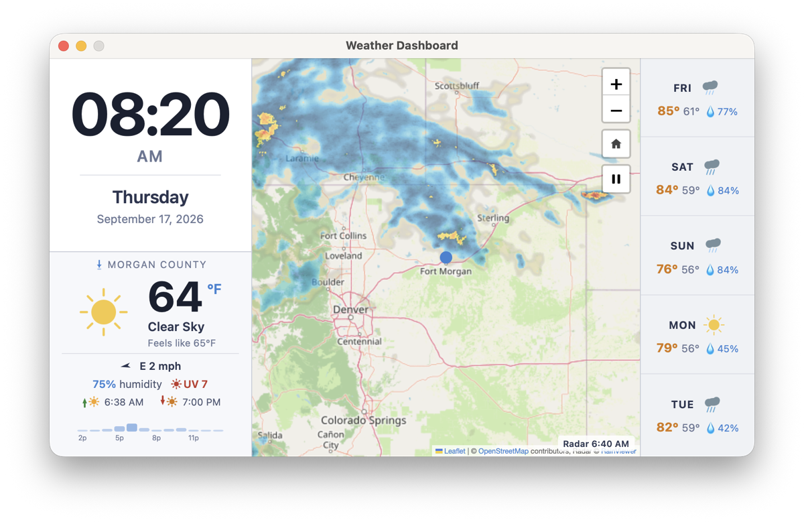

2026-09-28
Removed hover and tap highlights from interactive elements so the dashboard looks clean on a touchscreen.
A fullscreen kiosk-style weather dashboard for 800×480 touchscreens — live conditions, a 5-day forecast, and animated precipitation radar, with no API keys required.
It's built with Neutralino.js and Leaflet, ships as a native macOS app, and builds for Linux (including Raspberry Pi) and Windows from the same source.

On macOS, install with Homebrew:
brew tap kdekorte/weather-dashboard https://github.com/kdekorte/weather-dashboard.git
brew trust kdekorte/weather-dashboard
brew install weather-dashboardThe app is ad-hoc signed, so on first launch open System Settings → Privacy & Security and click Open Anyway. Allow location access so the forecast and map center on where you are.
You need Node.js 20+ and the Neutralino CLI (npm i -g @neutralinojs/neu):
neu update # download runtime binaries (first time only)
neu run # start the app with live reload
neu build # build binaries for macOS, Linux, and WindowsSettings such as units, 12/24-hour time, refresh interval, and radar opacity live under weatherConfig in neutralino.config.json.
2026-09-28
Removed hover and tap highlights from interactive elements so the dashboard looks clean on a touchscreen.
2026-09-23
Version 1.0.6 redesigned the preferences menu, splitting settings and location into separate dialogs. The map now returns to the home location after 10 minutes of inactivity.
2026-09-21
Added a dark theme with a cyan-blue palette that can be toggled live from Settings, then tuned its contrast. The forecast panel was widened and its fonts enlarged for readability. A showMenuBar option was also added.
2026-09-18
Renamed the project from bob-weather to Weather Dashboard and shipped versions 1.0.2 and 1.0.3, including a fix so the packaged bundle is named Weather Dashboard.app.
2026-09-17
Released 1.0.0 with a Homebrew cask and a release script. Geolocation moved from the WebView to a native CoreLocation helper with an embedded Info.plist, so macOS grants location permission correctly.
2026-09-16
First day of development: the three-column layout, Open-Meteo forecasts, Leaflet map with RainViewer radar, play/pause and home buttons, double-click to pin a location, UV index and an hourly precipitation bar, a custom app icon, and the macOS packaging script.